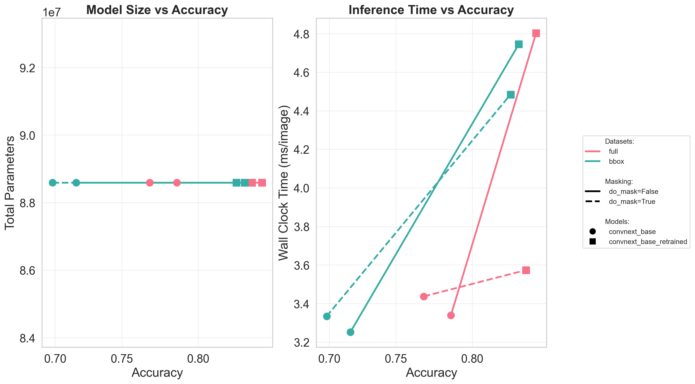

In this notebook, we benchmark the inference performance of retrained models. We evaluate the trade-off between model complexity (total parameters), inference speed (wall clock time), and accuracy across different masking strategies and datasets. The goal is to determine the efficiency of each architecture in terms of accuracy per unit of computation time and model size.
[1]:
import retinoto_py as fovea
args = fovea.Params(do_fovea=False)
args
[1]:
Params(batch_size=32, num_workers=4, prefetch_factor=0, image_size=224, grid_size_ecc=161, grid_size_ang=309, do_mask=False, do_fovea=False, use_hexagonal_grid=True, rs_min=-3.5, rs_max=0.7, angle_start=-5.235987755982989, angle_margin=0.010166966516471823, mode='bilinear', padding_mode='zeros', model_name='convnext_base', num_epochs=100, subset_factor=1, optimizer_name='adamw', loss_name='CrossEntropyLoss', base_lr=1e-06, final_lr=1e-09, num_warmup_epochs=20, delta1=0.3, delta2=0.002, weight_decay=0.0001, label_smoothing=0.0005, do_full_training=True, do_augment=True, augment_proba=0.85, stochastic_depth_prob=0.6, seed=1998, shuffle=True, verbose=False)
[2]:
model_name = args.model_name
model_name
[2]:
'convnext_base'
testing different networks¶
Benchmarking Loop: Comparing scaling effects on ConvNeXt architecture.
[3]:
json_filename = args.data_cache / '23_benchmarking_inference_retrained-models.json'
# %rm {json_filename} # FORCING RECOMPUTE
if json_filename.exists():
results = fovea.pd.read_json(json_filename)
else:
all_results = []
# Evaluate across masking configurations and datasets
for do_mask in [True, False]:
for dataset in fovea.params.all_datasets:
args = fovea.Params(do_mask=do_mask, do_fovea=False)
val_loader = fovea.get_val_loader(args, dataset)
for model_name in ['convnext_base']: #fovea.params.all_cn_model_names:
args.model_name = model_name
model_filename = args.data_cache / f'21_model_name={model_name}_dataset={dataset}.pth'
model = fovea.load_model(args, model_filename=model_filename)
param_stats = fovea.count_parameters(model)
total_layers = fovea.count_layers(model)
tic = fovea.time.time()
accuracy = fovea.get_validation_accuracy(
args, model, val_loader, f"Model {args.model_name}\t dataset: {dataset}\t(do_mask={do_mask})"
)
toc = fovea.time.time()
this_result = {
"model_name": model_name + '_retrained',
"do_mask": do_mask,
"dataset": dataset,
"accuracy": accuracy,
"wall_clock_time": (toc - tic) / len(val_loader.dataset),
"total_parameters": param_stats["total_parameters"],
"trainable_parameters": param_stats["trainable_parameters"],
"total_layers": total_layers,
}
all_results.append(this_result)
results = fovea.pd.DataFrame(all_results)
results.to_json(json_filename, orient="records", indent=2)
[4]:
# Review the performance metrics table
results
[4]:
| model_name | do_mask | dataset | accuracy | wall_clock_time | total_parameters | trainable_parameters | total_layers | |
|---|---|---|---|---|---|---|---|---|
| 0 | convnext_base_retrained | True | full | 0.830466 | 0.003573 | 88591464 | 88591464 | 383 |
| 1 | convnext_base_retrained | True | bbox | 0.822134 | 0.004484 | 88591464 | 88591464 | 383 |
| 2 | convnext_base_retrained | False | full | 0.835767 | 0.004803 | 88591464 | 88591464 | 383 |
| 3 | convnext_base_retrained | False | bbox | 0.826596 | 0.004745 | 88591464 | 88591464 | 383 |
[ ]:
# # Generate the comparison plots for ConvNeXt models
# fig, axes = fovea.plot_model_comparison(
# results,
# [model_name + '_retrained' for model_name in fovea.params.all_cn_model_names],
# fovea.params.all_datasets,
# do_masks=[True, False],
# figures_folder=args.figures_folder,
# save_name="23_model_convnext",
# )
[13]:
json_filename = args.data_cache / "14_model_cn_comparison.json"
results_14 = fovea.pd.read_json(json_filename)
# results_14 = results_14[results_14['model_name'=='convnext_base']]
results_14
[13]:
| model_name | do_mask | dataset | accuracy | wall_clock_time | total_parameters | trainable_parameters | total_layers | |
|---|---|---|---|---|---|---|---|---|
| 0 | convnext_tiny | True | full | 0.745228 | 0.002369 | 28589128 | 28589128 | 203 |
| 1 | convnext_small | True | full | 0.762746 | 0.002529 | 50223688 | 50223688 | 383 |
| 2 | convnext_base | True | full | 0.769229 | 0.003437 | 88591464 | 88591464 | 383 |
| 3 | convnext_large | True | full | 0.783868 | 0.006628 | 197767336 | 197767336 | 383 |
| 4 | convnext_tiny | True | bbox | 0.669524 | 0.001972 | 28589128 | 28589128 | 203 |
| 5 | convnext_small | True | bbox | 0.690212 | 0.002294 | 50223688 | 50223688 | 383 |
| 6 | convnext_base | True | bbox | 0.697987 | 0.003334 | 88591464 | 88591464 | 383 |
| 7 | convnext_large | True | bbox | 0.712978 | 0.006460 | 197767336 | 197767336 | 383 |
| 8 | convnext_tiny | False | full | 0.764920 | 0.002195 | 28589128 | 28589128 | 203 |
| 9 | convnext_small | False | full | 0.781633 | 0.002293 | 50223688 | 50223688 | 383 |
| 10 | convnext_base | False | full | 0.786827 | 0.003339 | 88591464 | 88591464 | 383 |
| 11 | convnext_large | False | full | 0.798989 | 0.006389 | 197767336 | 197767336 | 383 |
| 12 | convnext_tiny | False | bbox | 0.688645 | 0.001635 | 28589128 | 28589128 | 203 |
| 13 | convnext_small | False | bbox | 0.707827 | 0.002169 | 50223688 | 50223688 | 383 |
| 14 | convnext_base | False | bbox | 0.716461 | 0.003251 | 88591464 | 88591464 | 383 |
| 15 | convnext_large | False | bbox | 0.728453 | 0.006223 | 197767336 | 197767336 | 383 |
[16]:
results_14['model_name']=='convnext_base'
[16]:
0 False
1 False
2 True
3 False
4 False
5 False
6 True
7 False
8 False
9 False
10 True
11 False
12 False
13 False
14 True
15 False
Name: model_name, dtype: bool
[18]:
results_14_base = results_14[results_14['model_name']=='convnext_base']
results_14_base
[18]:
| model_name | do_mask | dataset | accuracy | wall_clock_time | total_parameters | trainable_parameters | total_layers | |
|---|---|---|---|---|---|---|---|---|
| 2 | convnext_base | True | full | 0.769229 | 0.003437 | 88591464 | 88591464 | 383 |
| 6 | convnext_base | True | bbox | 0.697987 | 0.003334 | 88591464 | 88591464 | 383 |
| 10 | convnext_base | False | full | 0.786827 | 0.003339 | 88591464 | 88591464 | 383 |
| 14 | convnext_base | False | bbox | 0.716461 | 0.003251 | 88591464 | 88591464 | 383 |
[19]:
merged_results = fovea.pd.concat([results, results_14_base], ignore_index=True)
[ ]:
# Generate the comparison plots for ConvNeXt models
fig, axes = fovea.plot_model_comparison(
merged_results,
[args.model_name, args.model_name + '_retrained'],
fovea.params.all_datasets,
do_masks=[True, False],
figures_folder=args.figures_folder,
save_name="23_model_convnext_retrained",
)

[7]:
# from matplotlib.lines import Line2D
# # Sort results by accuracy within each group to connect points with lines
# results_sorted = results.sort_values(['dataset', 'do_mask', 'accuracy'])
# # Define line styles based on do_mask
# linestyles = {True: '--', False: '-'}
# # Define markers for different models
# markers = {model_name: marker for model_name, marker in
# zip(fovea.params.all_rn_model_names, ['o', 's', '^', 'D', 'v', 'p', '*', 'H'][:len(fovea.params.all_rn_model_names)])}
# # Create figure with 2 subplots
# fig, axes = fovea.plt.subplots(1, 2)
# # Define color palette for datasets
# palette = fovea.sns.color_palette("husl", len(fovea.params.all_datasets))
# dataset_colors = {dataset: palette[i] for i, dataset in enumerate(fovea.params.all_datasets)}
# # Plot 1: Wall clock time vs Accuracy
# ax = axes[0]
# for dataset in fovea.params.all_datasets:
# for do_mask in [False]:
# # Get all data for this dataset/do_mask combination, ordered by model_name order
# data_subset = results_sorted[
# (results_sorted['dataset'] == dataset) &
# (results_sorted['do_mask'] == do_mask)
# ].copy()
# # Preserve the order of fovea.params.all_rn_model_names
# data_subset['model_name'] = data_subset['model_name'].astype('category')
# data_subset['model_name'] = data_subset['model_name'].cat.set_categories(fovea.params.all_rn_model_names)
# data_subset = data_subset.sort_values('model_name')
# if len(data_subset) > 0:
# # Plot all models connected by a single line
# ax.plot(data_subset['accuracy'],
# data_subset['wall_clock_time'],
# linestyle=linestyles[do_mask],
# color=dataset_colors[dataset],
# linewidth=2.5,
# label=f'{dataset} (mask={do_mask})')
# # Add markers for each model
# for model_name in fovea.params.all_rn_model_names:
# model_data = data_subset[data_subset['model_name'] == model_name]
# if len(model_data) > 0:
# ax.scatter(model_data['accuracy'],
# model_data['wall_clock_time'],
# marker=markers[model_name],
# color=dataset_colors[dataset],
# s=100,
# zorder=5)
# ax.set_xlabel('Accuracy', fontsize=12)
# ax.set_ylabel('Wall Clock Time (s)', fontsize=12)
# ax.set_title('Inference Time vs Accuracy', fontsize=13, fontweight='bold')
# ax.grid(True, alpha=0.3)
# # ax.legend(fontsize=10, loc='best')
# # Plot 2: Total parameters vs Accuracy
# ax = axes[1]
# for dataset in fovea.params.all_datasets:
# for do_mask in [False, True]:
# # Get all data for this dataset/do_mask combination, sorted by model and accuracy
# data_subset = results_sorted[
# (results_sorted['dataset'] == dataset) &
# (results_sorted['do_mask'] == do_mask)
# ].copy()
# # Preserve the order of fovea.params.all_rn_model_names
# data_subset['model_name'] = data_subset['model_name'].astype('category')
# data_subset['model_name'] = data_subset['model_name'].cat.set_categories(fovea.params.all_rn_model_names)
# data_subset = data_subset.sort_values('model_name')
# if len(data_subset) > 0:
# # Plot all models connected by a single line
# ax.plot(data_subset['accuracy'],
# data_subset['total_parameters'],
# linestyle=linestyles[do_mask],
# color=dataset_colors[dataset],
# linewidth=2.5,
# label=f'{dataset} (mask={do_mask})')
# # Add markers for each model
# for model_name in fovea.params.all_rn_model_names:
# model_data = data_subset[data_subset['model_name'] == model_name]
# if len(model_data) > 0:
# ax.scatter(model_data['accuracy'],
# model_data['total_parameters'],
# marker=markers[model_name],
# color=dataset_colors[dataset],
# s=100,
# zorder=5)
# ax.set_xlabel('Accuracy', fontsize=12)
# ax.set_ylabel('Total Parameters', fontsize=12)
# ax.set_title('Model Size vs Accuracy', fontsize=13, fontweight='bold')
# ax.grid(True, alpha=0.3)
# # ax.legend(fontsize=10, loc='best')
# # Create custom legend
# legend_elements = []
# # Add dataset colors
# legend_elements.append(Line2D([0], [0], color='none', label='Datasets:', lw=0))
# for dataset in fovea.params.all_datasets:
# legend_elements.append(Line2D([0], [0], color=dataset_colors[dataset], lw=2.5, label=f' {dataset}'))
# legend_elements.append(Line2D([0], [0], color='none', label='', lw=0)) # Spacer
# # Add line styles
# legend_elements.append(Line2D([0], [0], color='none', label='Masking:', lw=0))
# legend_elements.append(Line2D([0], [0], color='black', linestyle='-', lw=2.5, label=' do_mask=False'))
# legend_elements.append(Line2D([0], [0], color='black', linestyle='--', lw=2.5, label=' do_mask=True'))
# legend_elements.append(Line2D([0], [0], color='none', label='', lw=0)) # Spacer
# # Add models with markers
# legend_elements.append(Line2D([0], [0], color='none', label='Models:', lw=0))
# for model_name in fovea.params.all_rn_model_names:
# legend_elements.append(Line2D([0], [0], marker=markers[model_name], color='black',
# linestyle='none', markersize=8, label=f' {model_name}'))
# # Add legend to figure
# fig.legend(handles=legend_elements, loc='center left', bbox_to_anchor=(1.02, 0.5), fontsize=10)
# fovea.plt.tight_layout()
# fovea.plt.subplots_adjust(right=1.)
# fovea.savefig(fig, name='23_benchmarking_inference_retrained-models', figures_folder=args.figures_folder)
# fovea.plt.show()